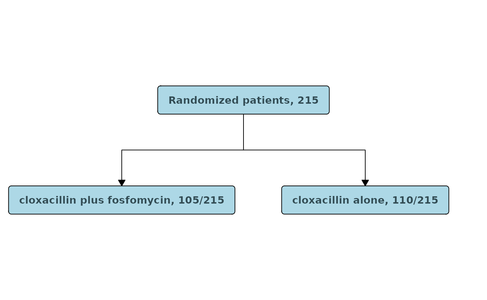
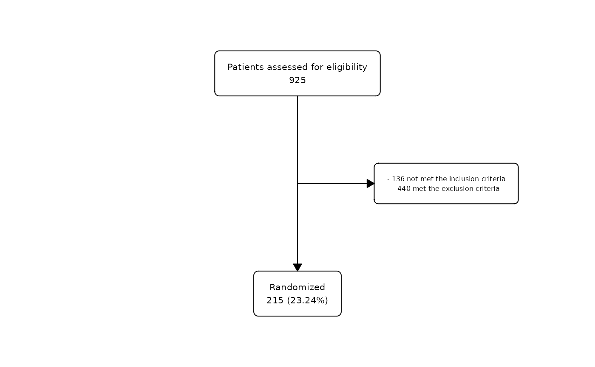
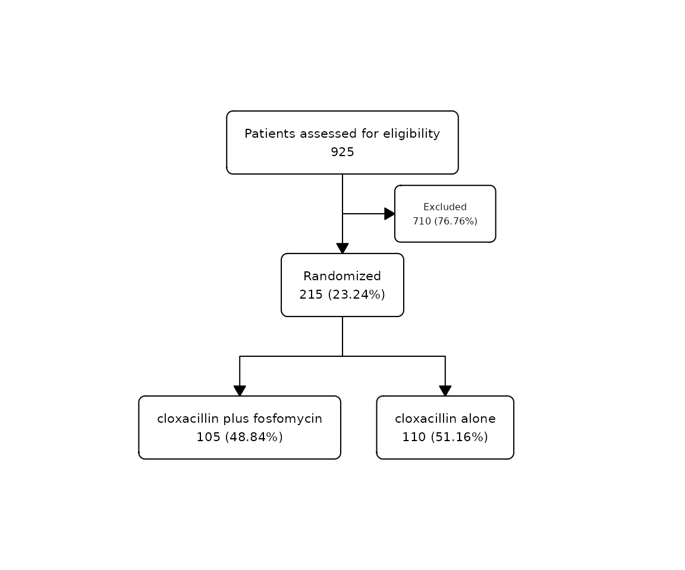
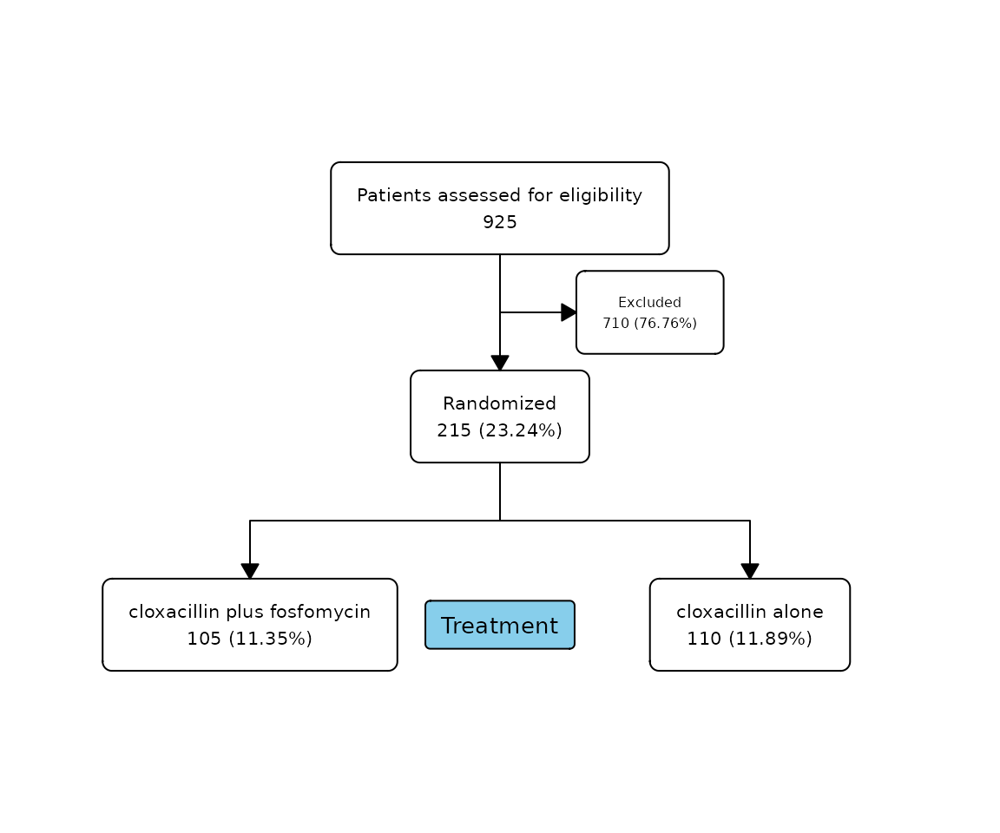
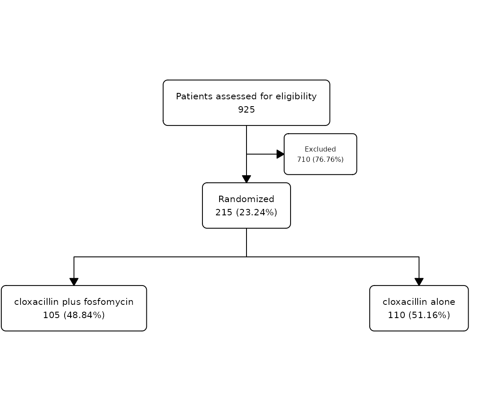

Flowchart Customization
Source:vignettes/articles/flowchart-customization.Rmd
flowchart-customization.RmdWe can customize the flowchart either with the arguments
provided by each function in the process of creating it, or directly in
the final output using the function fc_modify. We can also
change the box style for all boxes in the flowchart using
an argument in fc_draw.
Change function arguments
There are many different arguments in as_fc(),
fc_filter(), fc_split(), and
fc_draw() that allow you to customize the boxes created at
each step. See the documentation for these functions for more
information. Some examples of how to use these arguments are given at
the end of the vignette: Customization
examples.
Function to customize the flowchart
The function fc_modify allows the user to customise the
created flowchart by modifying its parameters, which are
stored in .$fc.
For example, let’s customize the following
flowchart:
Customization examples
In these examples, we will explore some of the arguments to customize
the following flowchart:
safo |>
as_fc(label = "Patients assessed for eligibility") |>
fc_filter(!is.na(group), label = "Randomized", show_exc = TRUE) |>
fc_split(group) |>
fc_draw()
Change the flowchart appearance
You can set the background color of each box using
bg_fill=:
safo |>
as_fc(label = "Patients assessed for eligibility", width = 0.6, text_fs = 10, text_fface = 2, text_ffamily = "serif", text_padding = 2, bg_fill = "lightgrey") |>
fc_filter(!is.na(group), label = "Randomized", show_exc = TRUE, text_color = "white", bg_fill = "darkgreen", text_color_exc = "white", bg_fill_exc = "firebrick") |>
fc_split(group, bg_fill = c("darkblue", "purple"), text_color = "white") |>
fc_modify(
~ . |>
mutate(
y = case_when(
type == "init" ~ 0.8,
.default = y
)
)
) |>
fc_draw()
You can also alter the background of the canvas behind the
flowchart boxes using the bg_canvas= argument
in fc_draw:
safo |>
as_fc(label = "Patients assessed for eligibility", width = 0.6, text_fs = 10, text_fface = 2, text_ffamily = "serif", text_padding = 2, bg_fill = "lightgrey") |>
fc_filter(!is.na(group), label = "Randomized", show_exc = TRUE, text_color = "white", bg_fill = "darkgreen", text_color_exc = "white", bg_fill_exc = "firebrick") |>
fc_split(group, bg_fill = c("darkblue", "purple"), text_color = "white") |>
fc_modify(
~ . |>
mutate(
y = case_when(
type == "init" ~ 0.8,
.default = y
)
)
) |>
fc_draw(canvas_bg = "darkgrey")Add a title to the flowchart
We can add a title to the flowchart using the argument
title= in the fc_draw() function:
safo |>
as_fc(label = "Patients assessed for eligibility") |>
fc_filter(!is.na(group), label = "Randomized", show_exc = TRUE) |>
fc_split(group) |>
fc_draw(title = "SAFO flowchart")
Add a title to the split
We can also add a title to a split in the flowchart,
using the argument title in the fc_split()
function:
Percentage with respect to the total rows
We can change the calculation of all percentages in a
flowchart. By default, percentages are calculated with
respect to the box in the previous level. With the argument
perc_total= we can change it, to calculate it with respect
to the initial box with the total number of rows:
Offset
We can add/remove space to the distance between boxes in a split
using the argument offset:
safo |>
as_fc(label = "Patients assessed for eligibility") |>
fc_filter(!is.na(group), label = "Randomized", show_exc = TRUE, perc_total = TRUE) |>
fc_split(group, offset = 0.1) |>
fc_draw()
safo |>
as_fc(label = "Patients assessed for eligibility") |>
fc_filter(!is.na(group), label = "Randomized", show_exc = TRUE, perc_total = TRUE) |>
fc_split(group, offset = -0.1) |>
fc_draw()
We can also add/remove space to the distance between the excluded box
in a filter using the argument offset_exc:
safo |>
as_fc(label = "Patients assessed for eligibility") |>
fc_filter(!is.na(group), label = "Randomized", show_exc = TRUE, offset_exc = 0.1) |>
fc_split(group) |>
fc_draw()
Change Box Corner Style
We can change the corner style of the flowchart boxes
using the box_corners argument with
fc_draw:
safo |>
as_fc(label = "Patients assessed for eligibility") |>
fc_filter(!is.na(group), label = "Randomized", show_exc = TRUE) |>
fc_split(group) |>
fc_draw(box_corners = "sharp")
Use expressions
We can use expressions in the label of each box. Expressions allow you to use bold or italic text without having to change the font of all the box text. For example:
safo |>
as_fc(label = expression(paste("Patients ", italic("assessed"), " for ", bold("eligibility")))) |>
fc_draw()Expressions even allow the use of formulas. For example:
safo |>
as_fc(label = expression(paste(y, " = ", alpha, " + ", beta, x))) |>
fc_draw()
Split in one group
We can perform an additional split only in one of the groups using
the argument sel_group=:
safo |>
as_fc(label = "Patients assessed for eligibility") |>
fc_filter(!is.na(group), label = "Randomized", show_exc = TRUE) |>
fc_split(group) |>
fc_split(N = c(50, 60), sel_group = "cloxacillin alone") |>
fc_draw()Then, we could also perform a filter in the other group:
safo |>
as_fc(label = "Patients assessed for eligibility") |>
fc_filter(!is.na(group), label = "Randomized", show_exc = TRUE) |>
fc_split(group) |>
fc_split(N = c(50, 60), sel_group = "cloxacillin alone") |>
fc_filter(N = 50, sel_group = "cloxacillin plus fosfomycin") |>
fc_draw()If we want to select a group in a flowchart with more
than two groups we have to supply a vector in sel_group=
with the desired groups to be selected:
safo |>
as_fc(label = "Patients assessed for eligibility") |>
fc_filter(!is.na(group), label = "Randomized", show_exc = TRUE) |>
fc_split(group) |>
fc_split(N = c(50, 55, 10, 100)) |>
fc_filter(N = 60, sel_group = c("cloxacillin alone", "group 2")) |>
fc_draw()Previous to modifying it, we can use the function
fc_view() to inspect the element $fc that we
want to change:
safo_fc |>
fc_view("fc")## # A tibble: 3 × 20
## id x y n N perc text type group just text_color text_fs
## <int> <dbl> <dbl> <int> <int> <chr> <chr> <chr> <lgl> <chr> <chr> <dbl>
## 1 1 0.5 0.667 925 925 100 "Pat… init NA cent… black 8
## 2 2 0.5 0.333 215 925 23.24 "Ran… filt… NA cent… black 8
## 3 3 0.65 0.5 710 925 76.76 "Exc… excl… NA cent… black 6
## # ℹ 8 more variables: text_fface <dbl>, text_ffamily <lgl>, text_padding <dbl>,
## # bg_fill <chr>, border_color <chr>, width <lgl>, height <lgl>, end <lgl>Let’s customise the text in the exclusion box (id = 3)
to specify different reasons for exclusion, and change the x
and y coordinate:
safo_fc |>
fc_modify(
~ . |>
mutate(
text = ifelse(id == 3, str_glue("- {sum(safo$inclusion_crit == 'Yes')} not met the inclusion criteria\n- {sum(safo$exclusion_crit == 'Yes')} met the exclusion criteria"), text),
x = case_when(
id == 3 ~ 0.75,
TRUE ~ x
),
y = case_when(
id == 1 ~ 0.8,
id == 2 ~ 0.2,
TRUE ~ y
)
)
) |>
fc_draw()